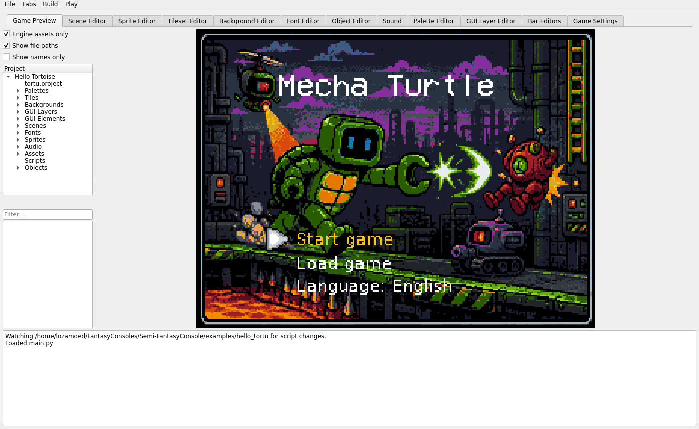
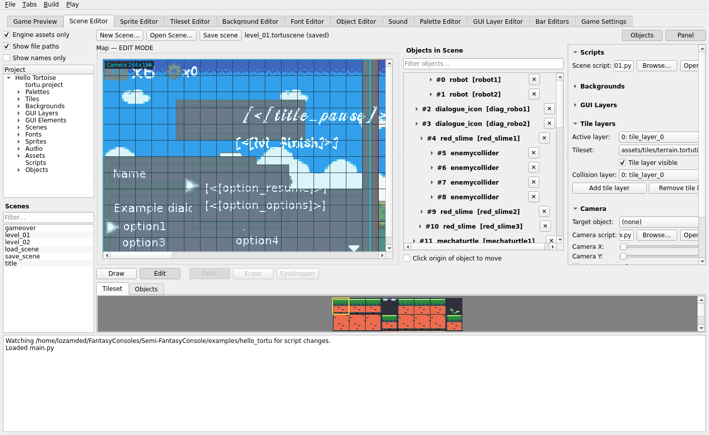
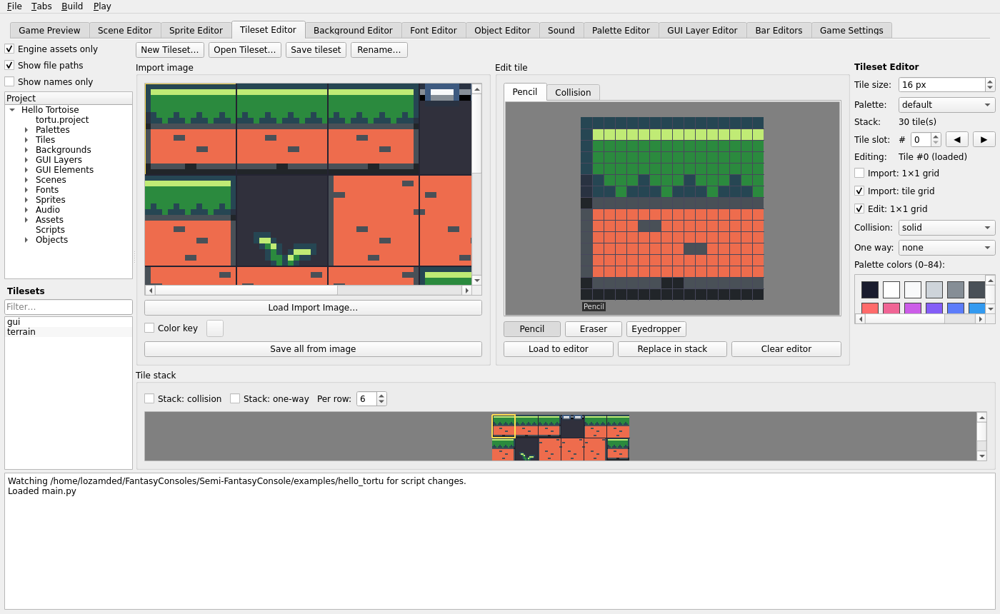
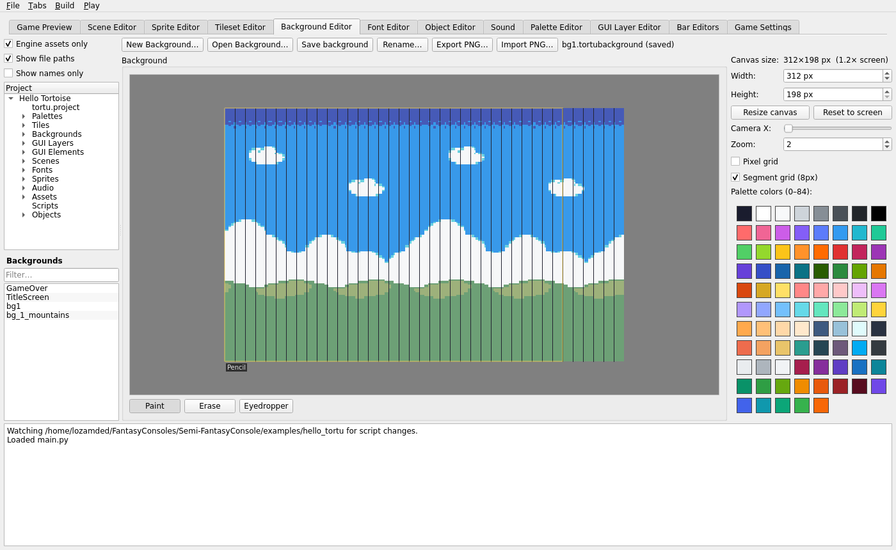
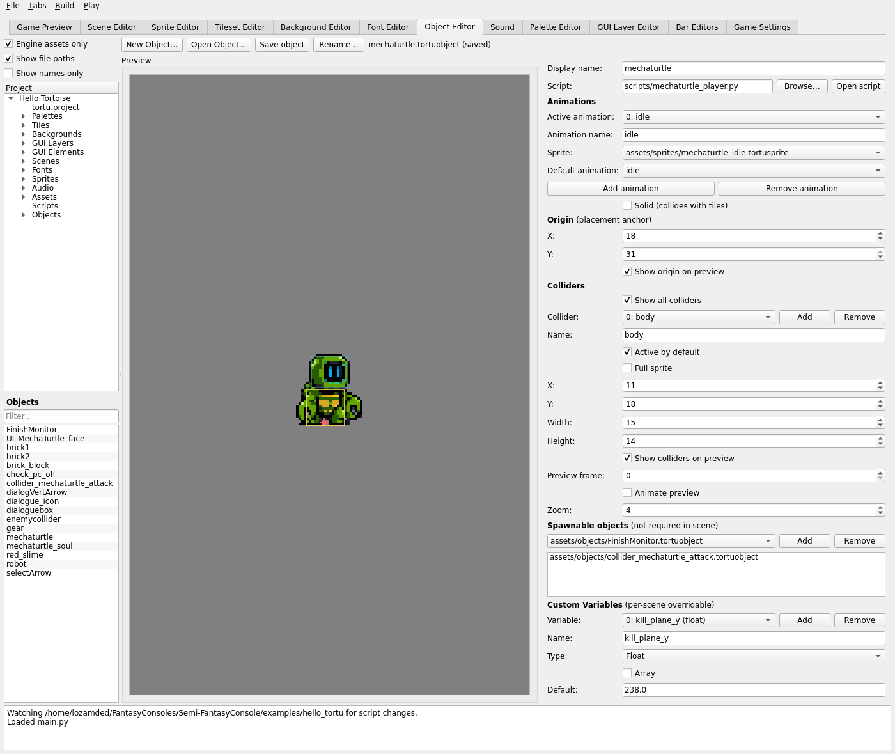
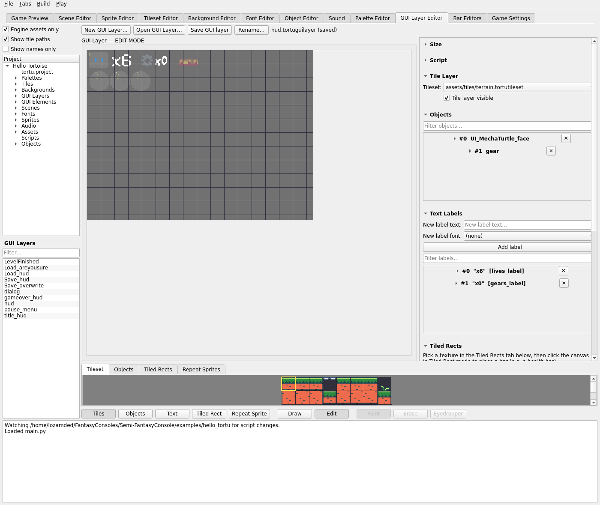
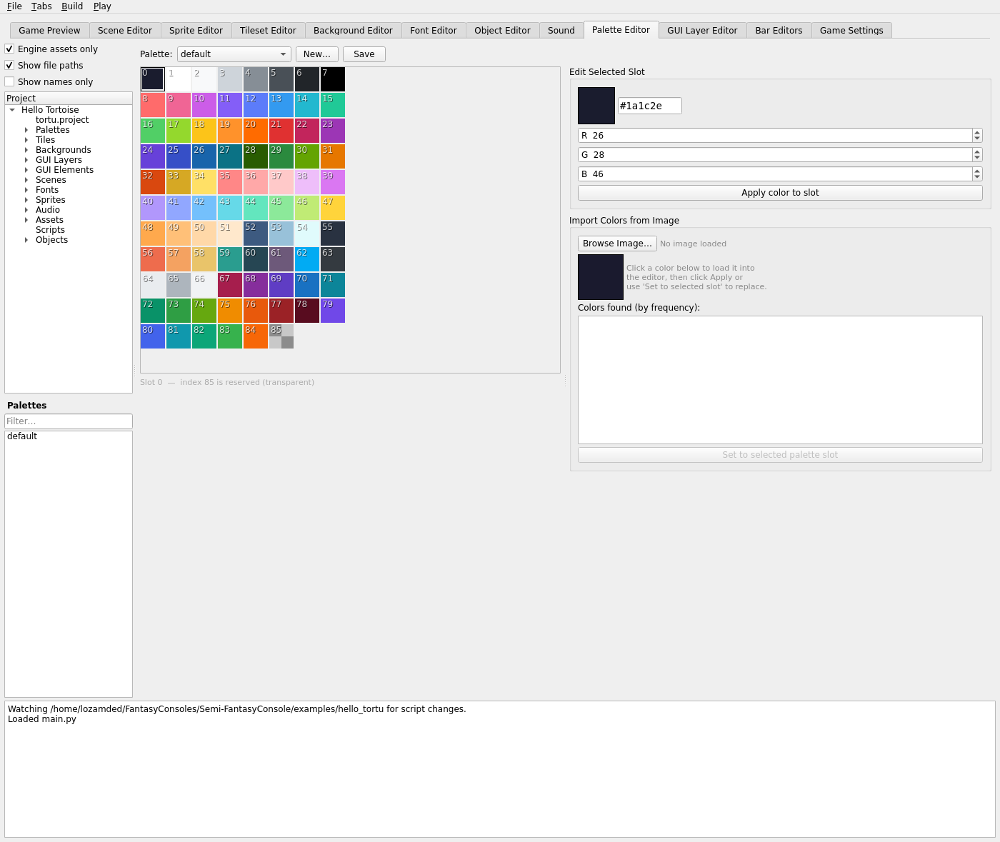
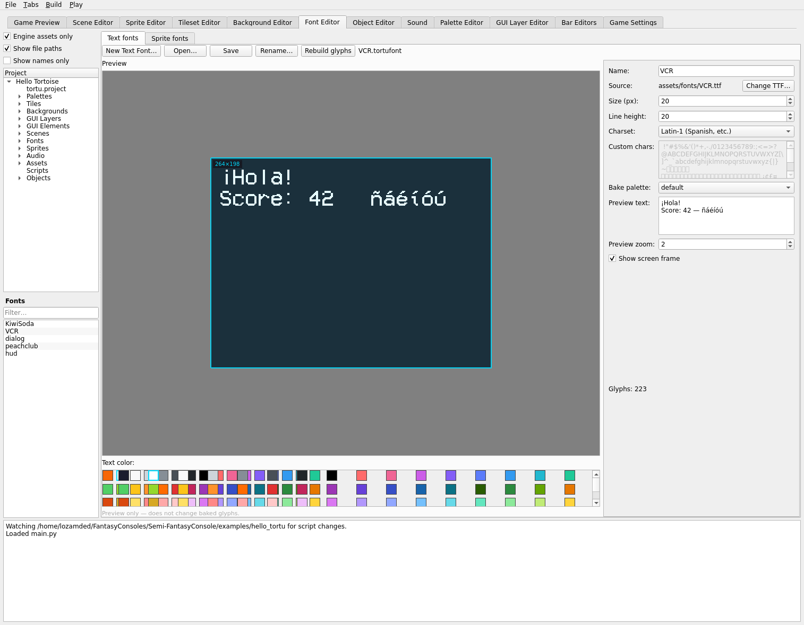
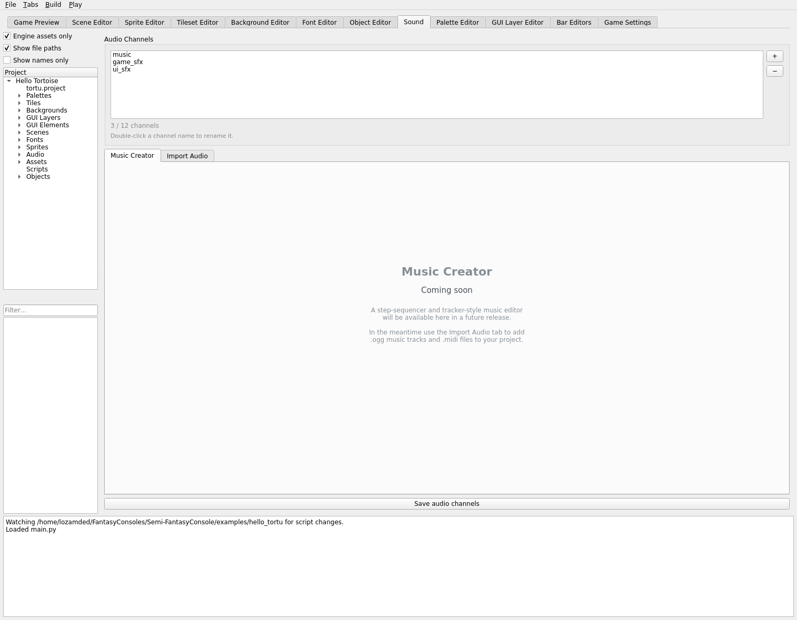
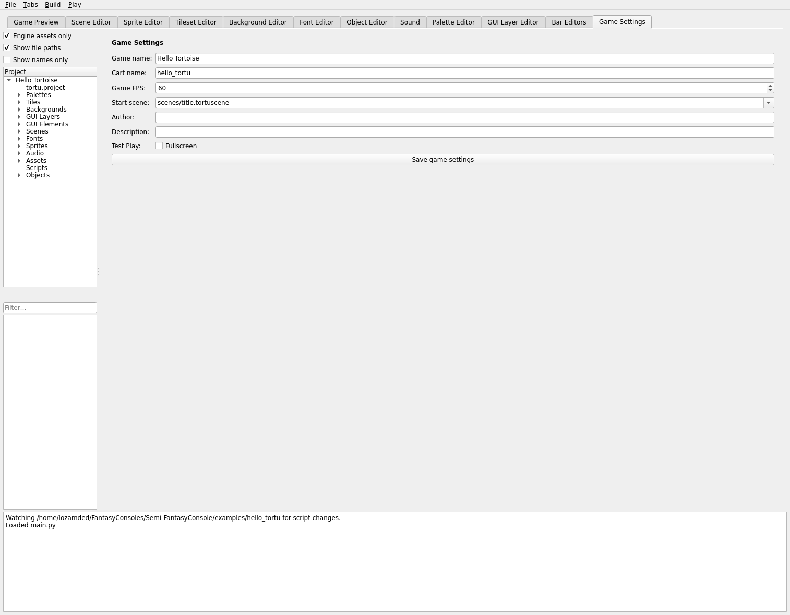

Walkthrough: Guided Tour
Every editor tab, shown with the real assets from the hello_tortu example project — "Mecha Turtle."
The previous page built something tiny from scratch. This page tours the same editors loaded with a real, finished project's content, so you can see what each one looks like once a project has real art, levels, and UI in it.
Game Preview
The title screen, rendered live by an embedded TortoiseEngine inside the editor — this is
the actual game running, not a mockup:

Game Preview — press F5 to also launch this as a real window, or F7 to debug-play with collider overlays. See Overview & workflow.
Scene Editor
A real gameplay level: multiple tile layers, a parallax background, and a scene full of placed enemies, collision triggers, and dialogue-linked NPCs:

level_01.tortuscene — a dozen-plus placed object instances, each with its own id and links (visible in the Objects in Scene list).
Full reference: Object & scene editors.
Tileset Editor

terrain.tortutileset — a full imported tile sheet, sliced and stacked with per-tile collision.
Background Editor

bg1.tortubackground — 312×198px (1.2× screen width), painted with the same Pencil/Eraser/Eyedropper tools as sprites.
Object Editor

mechaturtle.tortuobject — the player character prefab: 9 animations, two named colliders (body, head).
GUI Layer Editor

hud.tortuguilayer — the in-game HUD: text labels, repeat sprites (life pips), and placed icon objects. See GUI/HUD editors.
Palette Editor

The project's default palette — all 86 slots, index 85 reserved for transparency. See Palette for how a scene's palette actually relates to the tilesets, sprites, and backgrounds placed in it.
Font Editor

VCR.tortufont — 223 baked glyphs from a Latin-1 charset, previewed against a cyan frame marking the real 264×198 game viewport.
Sound Editor

Three configured channels — see Subsystems for how scripts read channel volume at runtime.
Game Settings

The project's own tortu.project fields, editable as a form instead of hand-editing JSON. See Project & palette for the underlying file.